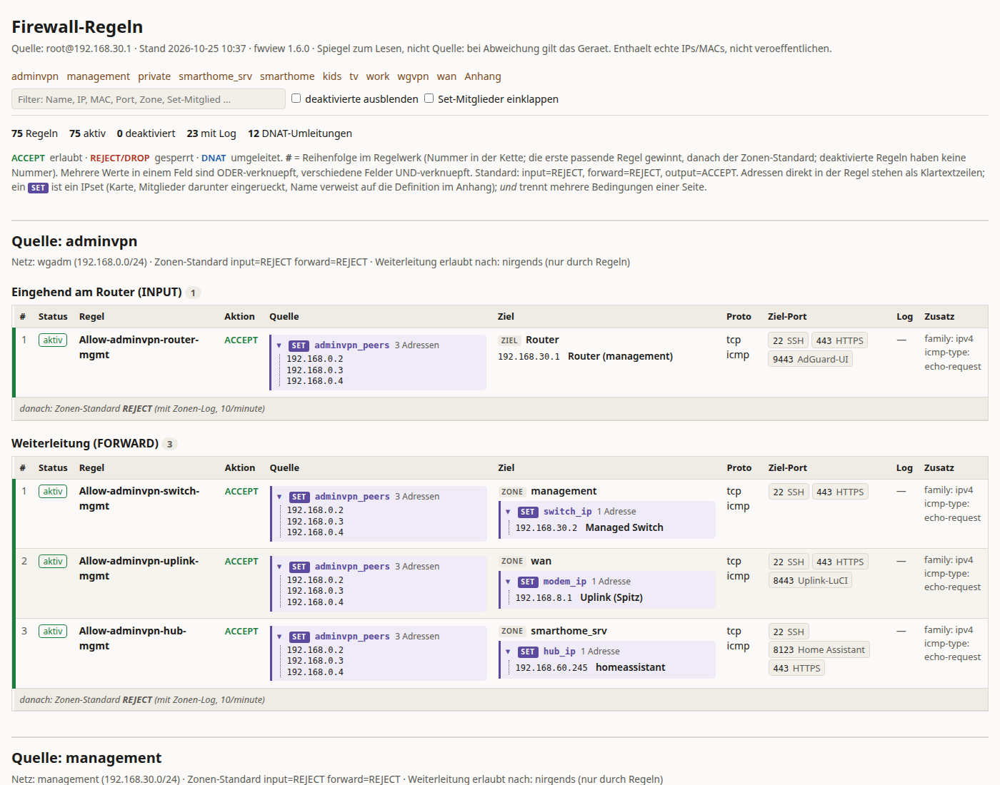
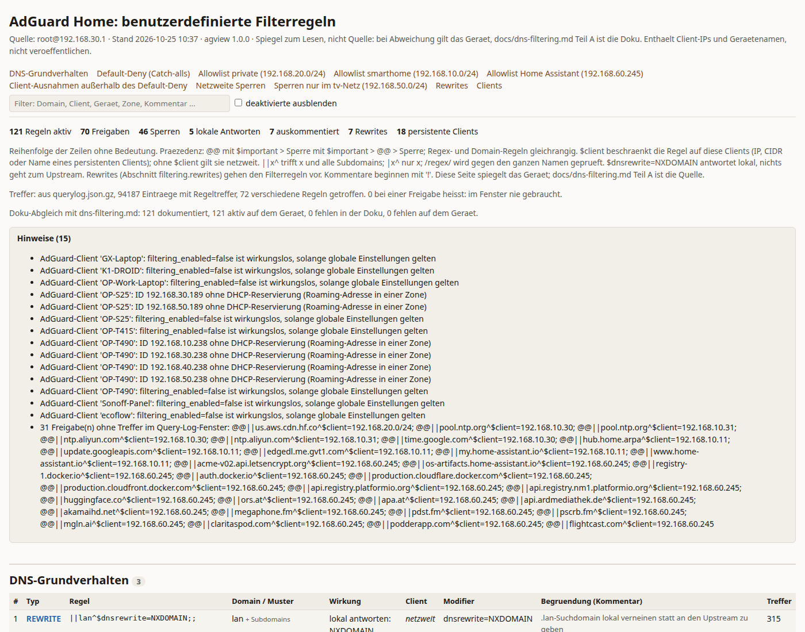
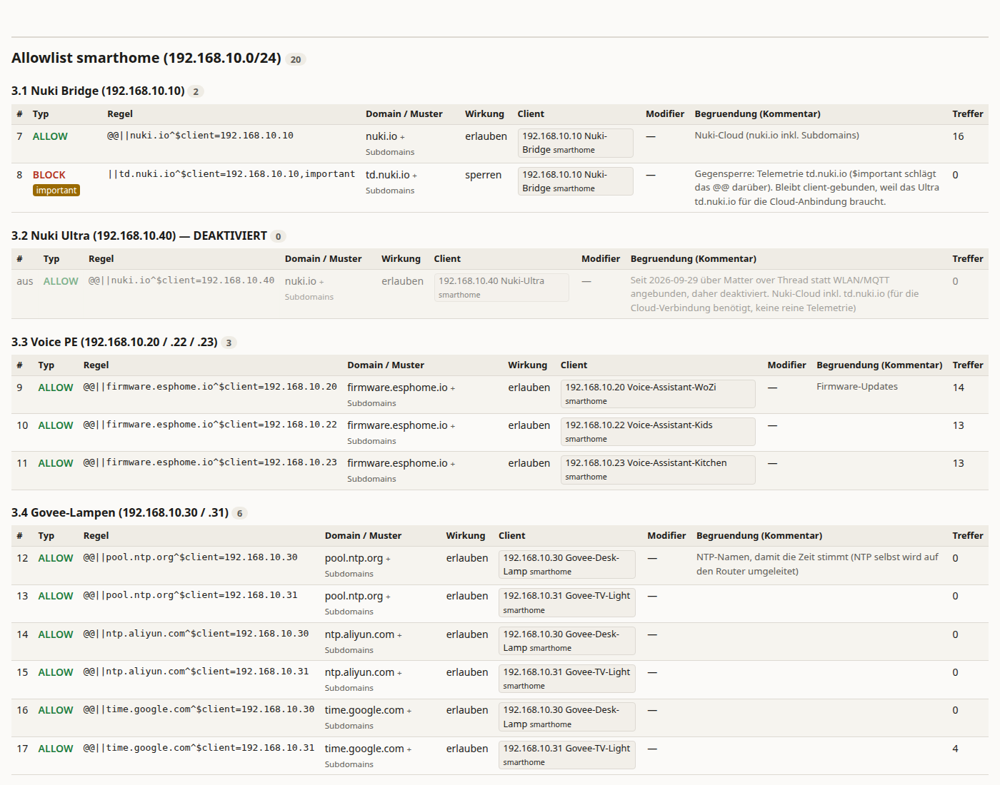

Read-only tooling that turns an OpenWrt + AdGuard Home setup into pages you can read, tables you can audit, and JSON you can diff. Written for a documented home network, released for anyone who thinks a firewall should be explainable.
OpenWrt's fw4 and AdGuard Home are excellent. Their configuration formats are not written
for humans who come back six months later. uci export firewall is a flat list of sections,
LuCI shows one rule at a time, and the AdGuard rule list is a text box. None of them answers the
questions an operator actually asks: which devices may talk to the hub, on which ports, and why?
This kit grew out of a home network that is documented the way production systems should be: a Markdown document is the source of truth, every change gets a journal entry, and audits are run against logs, not against memory. The tools here are the glue between that documentation and the live device.
The pages the kit renders are mirrors for reading. The documentation is the source; when the device
disagrees with the document, the device wins and the mismatch becomes a finding. agview
even diffs the device against your Markdown rule tables and reports both directions.
SSH in BatchMode with key auth, uci export instead of uci show
(no wireless keys in the output), and only the user_rules, filtering and
clients sections of adguardhome.yaml, never the whole file. The one tool
that writes asks first and is labelled.
One self-contained HTML file plus the same data as JSON. Audit scripts emit Markdown tables, nothing else: the tables are the data of an audit, the findings are written by a human who looked at them. No dashboard, no database, no daemon.
Everything runs on your workstation against the router. Device names come from the router's DHCP reservations, zones from its network config, so every IP in every table carries a name you recognise.
uci export firewall | dhcp | networkuser_rules, rewrites, persistent clients! --- heading --- lines of your list, client scope resolved to
device and zone, the comment above a rule as its rationale, hits per rule from the query log, and a diff
against your documentation (--doc).querylog.json (gzip in transit or from a copy)fw4 set (option loadfile). Ships with lists for public DoH/DoT resolvers, Google and Cloudflare ranges.
adminvpn: INPUT rules apart from FORWARD, each IP set expanded in place
(SET adminvpn_peers, three addresses) and the destination resolved to a device name. Filter box and
zone navigation at the top; the whole thing is one HTML file.

Four commands, a few minutes, and you have the data for a report. The findings are yours to write; the kit deliberately stops at the tables.
# 1. Fetch AdGuard's query log compressed. AdGuard only flushes it to disk every
# 1,000 entries, so the last hour of a quiet network may still sit in memory.
ssh root@192.168.30.1 'gzip -c /var/persist/adguardhome/data/querylog.json' > querylog.json.gz
# 2. Firewall log of the window, as Markdown tables
scripts/fwlog-audit.py --since '2026-10-25 00:30' --out fwlog.md
# 3. DNS query log of the same window
scripts/dnslog-audit.py --since '2026-10-25 00:30' --querylog querylog.json.gz --out dnslog.md
# 4. Refresh the two mirrors; agview counts hits per rule from the same copy
scripts/fwview.py --out fwview.html
scripts/agview.py --out agview.html --querylog querylog.json.gz --doc docs/dns-filtering.md| Prefix | Class | Lines | Share | First | Last | Max/min | Limit/min | Minutes at limit |
|---|---|---|---|---|---|---|---|---|
reject wgvpn in | zone-in | 55 | 38.5 % | 25.10. 00:50 | 25.10. 10:28 | 4 | 10 | 0 |
reject smarthome_srv forward | zone-fwd | 35 | 24.5 % | 25.10. 00:30 | 25.10. 01:35 | 10 | 10 | 2 |
Block-hubsrv-wan-all | rule | 30 | 21.0 % | 25.10. 00:30 | 25.10. 01:35 | 9 | 6 | 3 |
drop wgvpn invalid ct state | invalid | 19 | 13.3 % | 25.10. 01:18 | 25.10. 09:25 | 3 | – | 0 |
Table T1 of fwlog-audit.py, from a real ten-hour window. The last column is the one people miss:
minutes in which the kernel's log rate limit was saturated, i.e. minutes with hits you never saw.
--from-dir DIR and reads saved
uci export output (and a query-log copy) from a directory instead of SSH. That is how the tests run,
and how you can inspect a colleague's export without touching their device.
Here is the limitation that shaped this whole project. In stock fw4 a rule or redirect can
reference exactly one named set via option ipset. You can say "source is in
this set" or "destination is in this set", but not both at once. The moment you want
"only these pinned devices (IP + MAC) may reach this group of addresses", you are back to
writing one rule per device, or one rule per destination, and keeping them in sync by hand.
My router runs a patched firewall4 that turns option ipset into
list ipset. Several sets in one rule are AND-ed; direction (src, dest) and
negation apply per entry; a single option ipset keeps working, and a ruleset without
multi-set rules renders byte-for-byte identical. Devices become members of sets, rules reference sets, and
a new device means one edit instead of a hunt through the rule list.
config rule
option name 'Allow-admin-hub-ha-1'
option src 'private'
option src_ip '192.168.20.111'
option src_mac '02:aa:...'
option dest 'smarthome_srv'
option dest_ip '192.168.60.245'
option dest_port '8123'
option target 'ACCEPT'
config rule
option name 'Allow-admin-hub-ha-2'
# ... same again for the next deviceconfig rule
option name 'Allow-admin-hub-ha'
option src 'private'
option dest 'smarthome_srv'
list ipset 'admin_pins src' # ip+mac pairs
list ipset 'hub_ip dest' # the hub
option dest_port '8123'
option target 'ACCEPT'
# new admin device? add it to admin_pins.
# a fifth device in the zone matches nothing:
# fail-closed by default.In practice this means a pair set of pinned devices on the source side and an address set on the destination
side, in the same rule. On my router eighteen rules use two sets today, the mirror above renders them, and a
guard script re-applies the patch after upgrades and shouts if the installed fw4 version is unknown.
fw4 silently reads option ipset 'setA setB' as
a reference to setA alone: the rule matches fewer conditions than you wrote, and nothing tells you.
With list support that single-line form becomes a likely mistake, so the second PR rejects unknown tokens with a
warning instead of guessing.
Both are open against openwrt/firewall4. The feature series is split so that the three independent
fixes found on the way can be backported on their own.
option ipset becomes list ipset, references are AND-ed, each validated on its own.
Preceded by three fixes: an empty set match emitted for proto 'tcp icmp' with a port set (invalid nft,
whole ruleset failed to load), a misleading family-conflict message, and repeated separators in set references
shifting the direction to the wrong field. Templates rule.uc, redirect.uc,
mangle-rule.uc, core fw4.uc, three new test suites.
A reference with more than three tokens, or a token that is not a direction, now drops the section with the usual invalid value warning instead of being silently truncated. The upgrade risk is stated openly in the PR, and a warn-only variant is offered for discussion. Submitted separately so it can be taken, changed or dropped without touching the feature series.
The kit itself does not need the patch. On stock fw4, fwview simply renders
single-set rules. With the patch, it renders every set of a rule in place, which is what makes the mirror readable.
Allow-<zone>-<target>-<service>, Block-<zone>-wan-all,
Mute-<zone>-<what>. A log line's prefix is enough to know which rule fired and whether that
was expected. fwlog-audit groups by exactly these prefixes.
Known noise (mDNS, SSDP, NAT-PMP probes, discovery broadcasts) is dropped by small nft include files with
their own counters and no log, placed before the zone catch-all. The policy does not change; the log stops
lying about its volume and the rate limit stays free for the lines that matter.
Every table is deterministic for a given input. Re-run an audit with the same --since on a later log and
diff the Markdown. The JSON next to each HTML mirror is the same data without the layout, for scripts or for a model you
are willing to hand your addresses to.
The sample pages in reports/ come from real runs. MAC addresses are replaced by deterministic
02:… pseudonyms, consistent across files; device prefixes that were initials are neutral now. Private
IPs and zones are untouched so the tables stay legible.
fw4, dropbear
key auth for root, AdGuard Home with its query log on disk. Device names come from
uci export dhcp, so reservations pay off twice.git clone https://github.com/one7two99/openwrt-audit-kit.git
cd openwrt-audit-kitroot@192.168.30.1; pass your own with --host.
scripts/fwview.py --host root@192.168.1.1 --out fwview.html
scripts/agview.py --host root@192.168.1.1 --out agview.html --no-doc
xdg-open fwview.html.gitignore excludes all generated files; keep it that way before you publish anything.